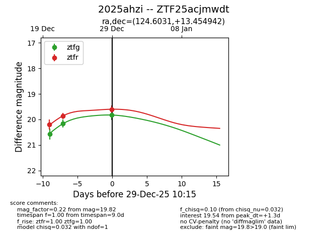
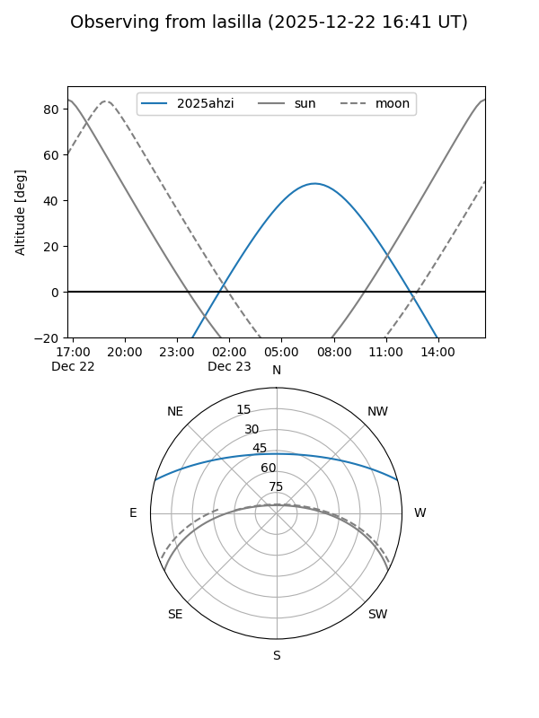
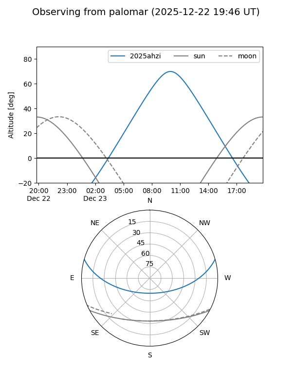
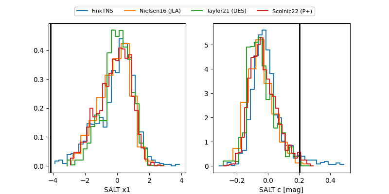

2025ahzi
Target 2025ahzi at 2025-12-29 09:31
Aliases and brokers:
FINK: fink-portal.org/ZTF25acjmwdt
Lasair: lasair-ztf.lsst.ac.uk/objects/ZTF25acjmwdt
ALeRCE: alerce.online/object/ZTF25acjmwdt
TNS: wis-tns.org/object/2025ahzi
YSE: ziggy.ucolick.org/yse/transient_detail/2025ahzi
alt names
ZTF25acjmwdt (ztf,fink_ztf)
2025ahzi (tns,yse)
Coordinates:
equatorial (ra, dec) = 124.6031,+13.45494
equatorial (HMS+DMS) = 08:18:24.73,+13:27:17.79
galactic (l, b) = (210.2194,+25.26139)
Flags:
Photometry:
last ztfg=20.15, ztfr=19.60
2 ztfg, 3 ztfr detections
Lightcurve

Visibility


Additional plots
